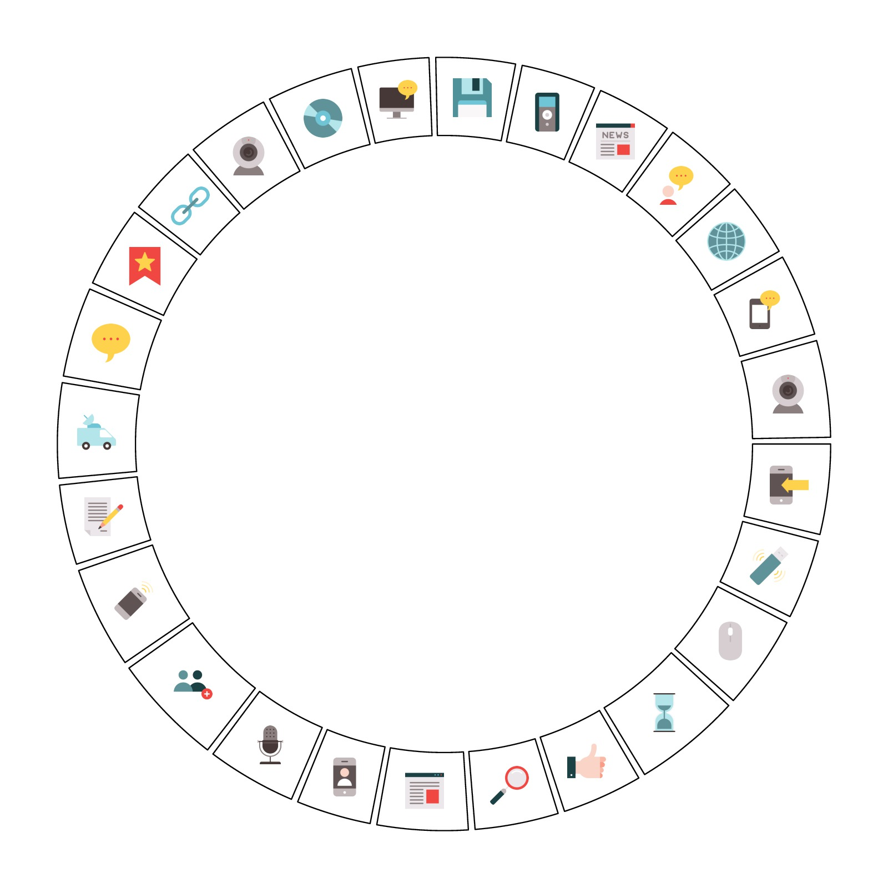

png is from http://www.flaticon.com/packs/communication-and-media-2
set.seed(123)
fa = sample(letters, 1000, replace = TRUE)
x = rnorm(1000)
files = list.files("example/png/", full.names = TRUE)
library(png)
library(circlize)
circos.initialize(fa = fa, x = x)
circos.trackPlotRegion(ylim = c(0, 1), panel.fun = function(x, y) {
xcenter = get.cell.meta.data("xcenter")
ycenter = get.cell.meta.data("ycenter")
pos = circlize:::polar2Cartesian(circlize(xcenter, ycenter))
f = sample(files, 1)
image = as.raster(readPNG(f))
rasterImage(image,
xleft = pos[1, 1] - 0.05,
ybottom = pos[1, 2] - 0.05,
xright = pos[1, 1] + 0.05,
ytop = pos[1, 2]+ 0.05)
})
circos.clear()